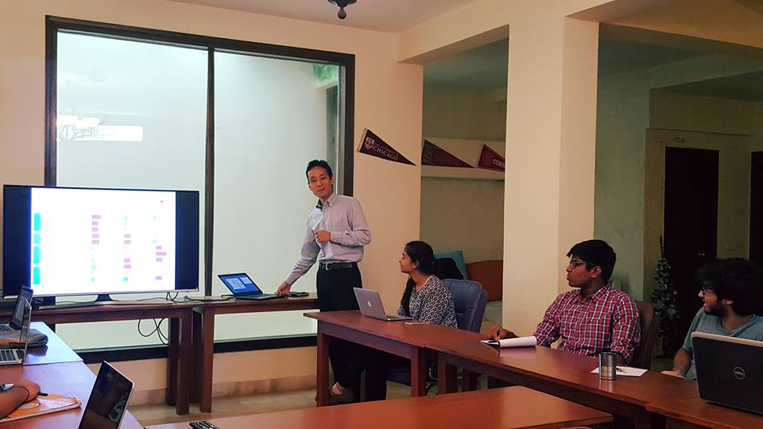

Career Mentorship
The ultimate objective of our Career Mentorship program is to endow students with knowledge and skills to succeed in college and life. The program will support students to obtain maximum value from a college education - academically, professionally and socially, all of which are essential to success.
Whether investigating emerging markets at Goldman Sachs, enhancing self-driving cars at Google, or exploring the politics of gender at The New York Times. Of course, no program can get a student an internship or a job but we help them to give their best shot at achieving their ambitious goals.
Introductory Webinars
Advice from speakers at college is often too philosophical to set specific goals within an industry. However, our webinars will feature advice from Indians who are leading professionals in their respective industries and will contain actionable insights, from individuals who have their fingers on the pulse. They will also provide pointers and resources for students on resume, cover letter, and interview preparation. Moreover, they will tailor their advice to international students in particular.
For example, in Computer Science the elements of the workshop will contain:
- Future of CS: Cloud, Analytics, Mobile, Social
- Introducing Subfields (AI, Machine Learning, Big Data)
Acculuration Webinars
For example, what differentiates a New Yorker from a Californian from a Texan?
We also explore the diversity of religions across the American landscape, from
Evangelical Christians to Orthodox Jews to New-Age Buddhists (and yes, even
Scientologists like Tom Cruise).
As with any society, America has its cultural norms, and the better you know and practice them, the better your experience in any setting, and the better you fit in. We will discuss matters from etiquette to communication, which are applicable in diverse settings, from social to professional.
How to develop your academic pathTo get to the top by identifying
- Courses you need to do to maximize development and establish an unique edge
- Internship opportunities
- Companies that best suit your work profile and personality while also understanding the job requirements and what they are looking for